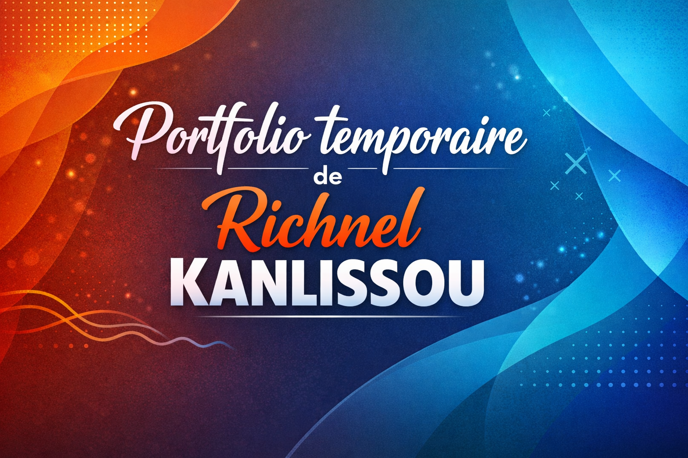

Les projets déja réalisés
Language c
-
Un code capable de trouver le pgcd de deux entier ecrit au clavier
-
Un code capable de faire la somme de trois réel ecris au clavier
-
Un code qui demande votre age et si vous avez le permis avant de preciser si vous êtes éligible à conduire
Html et css
-
Le portfolio actuel

-
Un site qui célèbre la fête nationale du Bénin
Projets à venir
- Me perfectionner en language c, en html, css
- Développer une meilleur gestion des bases de données SQL;
- Apprendre d'autres languagues informatiques comme Python, Javascript etc...
- Faire evoluer et améliorer mes compétences en programmation;
- Obtenir une licence en Mathématiques Informatiques et Application et si possible une licence en informatique ( Intelligence artificielle; Génie Logiciels; hacking );
- Poursuivre en Master en informatique et si possible un doctorat.